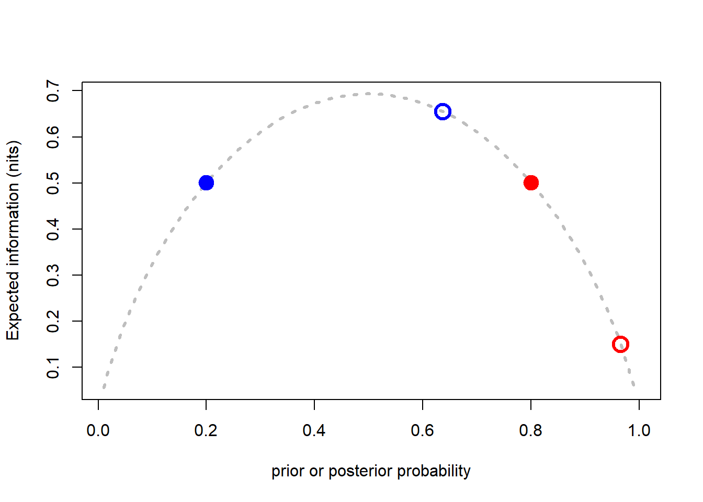
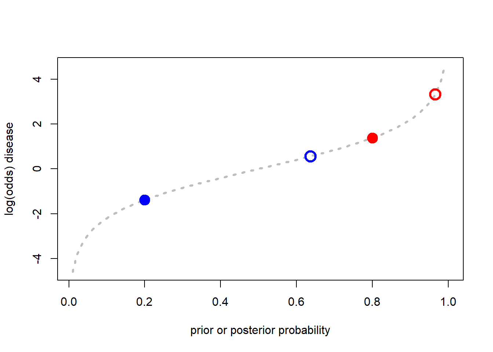

In the previous section we saw that \(LR\) can be interpreted as information quantities. We also saw that the quantity of information contained in an indefinite message (such as a prediction of disease resulting from an imperfect forecaster) causes a separation of prior and posterior probabilities if we use the \(LR\) within the framework of Bayesian probability updating. This section of the workshop introduces some information quantities that unite these ideas and are central in the information theoretic interpretation of forecasting and decision-making. The introduction here will be brief and you are referred to Hughes (2012) for a more detailed and technical description of the inter-connections among these quantities.
Specifically, we will be interested in the relative entropy, the expected mutual information, and the specific information.
The relative entropy is also known as the Kullback-Leibler divergence. Informally, it can be thought of as a measure of the discrepancy (or distance) between two probability distributions. It is also the weighted average of the information contents about outcomes \(D_{j}\) resulting from a particular message, \(T\), where the weights are the posterior probabilities of \(D_{j}\) given \(T\):
\[ I(T)= \sum_{j=1}^{m}Pr(D_{j}|T) log\left[ \frac{Pr(D_{j}|T)}{Pr(D_{J})} \right] \]
By now the log term on the r.h.s. of the equation will be familiar as an information quantity. The fact that the information terms are weighted by the probabilities that the corresponding outcomes occur, shows that \(I(T)\) is an expected value. We saw in the last section that, in the context of disease forecasting, the separation between prior and posterior distributions depends on the likelihood ratios associated with the forecaster being used. The relationship is a direct one; \(I(T)\) is the expected value of the log likelihood ratios. It is the average reduction in uncertainty (over all outcomes) resulting from the use of the forecaster.
Mutual Information \(I_{M}\) can be thought of as a general measure of the reduction in uncertainty about one variable that arises from knowing the values of another; in an informal sense it can be thought of as a generalized measure of correlation between two variables. It is strictly positive and equals 0 only when the two variables are independent. In the context of forecasting, the two variables can be the forecast situations and the actual disease outcomes and we can specify it as:\[ I_{M}=\sum_{i=1}^{n} \sum_{j=1}^{m} Pr(T_{i}\cap D_{j})log\left[\frac{Pr(T_{i}\cap D_{j})}{Pr(T_{i})Pr(D_{j})}\right]\] \(I_{M}\) is the expected value of \(I(T)\) and both of these quantities are strictly positive, but \(I_{M}\) is also the expected value of another important information quantity — the specific information.
The specific information \(I{_s}(T_{i})\) measures the information content of an indefinite message in a single context. For example the specific information associated with a prediction of no disease would be:\[ I_{s}(T_{i})=\sum_{j=1}^{m}Pr(D_{j})log\left[\frac{1}{Pr(D_{j})} \right]-\sum_{j=1}^{m}Pr(D_{j}|T_{i})log\left[\frac{1}{Pr(D_{j}|T_{i})} \right]\]
The first term on the r,h,s. is the entropy for disease outcomes in the absence of a forecast, \(H(D)\). The second term is the entropy of disease outcomes given a particular forecast, \(H(D|T_{i})\). Thus, unlike the relative entropy and the expected mutual information, the specific information may be positive or negative. Situations in which it is negative arise when the uncertainty following a forecast is greater than before the forecast. We consider a specific hypothetical example. The example was first introduced by McRoberts et al. (2003) as a gedankenexperiment on the interaction between evidence and uncertainty in decision-making about disease management. At that time, we had not encountered the idea of specific information and so the original presentation of the idea was incomplete. The presentation given here follows the later version given in Hughes (2012), after Gareth had done the hard work of researching and teasing out the relationship between the entropy, relative entropy, specific information and expected mutual information.
Consider two farmers, A and B, who face the problem of trying to decide if they should apply a costly pesticide treatment for a disease that only occurs sporadically, but is damaging when it does. The local university has developed a prediction system for the disease based on a simple set of weather and crop establishment variables that are familiar to the growers; they understand the relationship between the risk factors and the forecasts from the model, and only have to decide what to do on the basis of the forecast for their own crops. Farmer A is an optimist whose subjective prior for the disease to be damaging is 20%. Farmer B is a pessimist who believes the chances of disease (before the forecast) are 80%. Both farmers use their copies of the smartphone app developed by the university and both receive the forecast that disease will occur this season. Behind the scenes this forecast is based on a logistic regression model with a positive \(LR\) for disease of 7.0. The question for us to examine are (1) what is the posterior probability of disease for each farmer, assuming that they update their priors according to Bayesian principles, and (2) what are the corresponding entropies?
# Analysis for question 1
# Do the Bayesian updating based on the priors, forecast and LRc
A_prior <-0.2
B_prior <-0.8
A_prior_odds <-A_prior/(1-A_prior)
B_prior_odds <-B_prior/(1-B_prior)
LRc <-7
logA_posterior_odds <-log(A_prior_odds)+log(LRc)
logB_posterior_odds <-log(B_prior_odds)+log(LRc)
A_posterior_odds <-exp(logA_posterior_odds)
B_posterior_odds <-exp(logB_posterior_odds)
A_posterior <-A_posterior_odds/(1+A_posterior_odds)
B_posterior <-B_posterior_odds/(1+B_posterior_odds)
# Analysis for question 2
# Calculate the prior expected information (entropy) and conditional posterior expected information values
H_A_prior <- -((A_prior*log(A_prior))+((1-A_prior)*log(1-A_prior)))
H_A_posterior <- -((A_posterior*log(A_posterior))+((1-A_posterior)*log(1-A_posterior)))
H_B_prior <- -((B_prior*log(B_prior))+((1-B_prior)*log(1-B_prior)))
H_B_posterior <- -((B_posterior*log(B_posterior))+((1-B_posterior)*log(1-B_posterior)))
p <-seq(0.01,1,0.01)
compl_p <-1-p
logp <- log(p)
log_compl_p <-log(compl_p)
sum_terms <-(p*logp)+(compl_p*log_compl_p)
H_p <- -sum_terms
plot(p,H_p, ty="l", lty=3, col="gray", lwd=3, ylab="Expected information (nits)",
xlab="prior or posterior probability")
points(A_prior, H_A_prior, pch=19, col="blue", cex=2)
points(B_prior, H_B_prior, pch=19, col="red", cex=2)
points(A_posterior, H_A_posterior, pch=21, col="blue", lwd=3, cex=2)
points(B_posterior, H_B_posterior, pch=21, col="red", lwd=3, cex=2)
# Look the results in terms of change in log(odds)
odds_p <-p/(1-p)
log_odds_p <-log(odds_p)
plot(p,log_odds_p, ty="l", lty=3, col="gray", lwd=3, ylab="log(odds) disease",
xlab="prior or posterior probability")
points(A_prior, log(A_prior_odds), pch=19, col="blue", cex=2)
points(B_prior, log(B_prior_odds), pch=19, col="red", cex=2)
points(A_posterior, logA_posterior_odds, pch=21, col="blue", lwd=3, cex=2)
points(B_posterior, logB_posterior_odds, pch=21, col="red", lwd=3, cex=2)
# Calculate the relative entropy and specific information of the message for each farmer
# Farmer A
# Relative entropy
A_prior_compl <-1-A_prior
A_compl_odds <-(1-A_prior)/A_prior
A_compl_post_log_odds <-log(A_compl_odds)+log(1/LRc)
A_compl_post_odds <-exp(A_compl_post_log_odds)
A_compl_post <-A_compl_post_odds/(1+A_compl_post_odds)
D_KL_A <-(A_posterior*(log(A_posterior)-log(A_prior)))+(A_compl_post*(log(A_compl_post)-log(A_prior_compl)))
# Specific Information
I_s_T_A <-H_A_prior-H_A_posterior
# Farmer B
# Relative entropy (Kullback--Leibler divergence)
B_prior_compl <-1-B_prior
B_compl_odds <-(1-B_prior)/B_prior
B_compl_post_log_odds <-log(B_compl_odds)+log(1/LRc)
B_compl_post_odds <-exp(B_compl_post_log_odds)
B_compl_post <-B_compl_post_odds/(1+B_compl_post_odds)
D_KL_B <-(B_posterior*(log(B_posterior)-log(B_prior)))+(B_compl_post*(log(B_compl_post)-log(B_prior_compl)))
# Specific Information
I_s_T_B <-H_B_prior-H_B_posterior
# Summary of information analysis for the _gedankenexperiment_
Farmer_info_summary <-matrix(c(H_A_prior,H_A_posterior,D_KL_A,I_s_T_A,
H_B_prior,H_B_posterior,D_KL_B,I_s_T_B), nrow=4, ncol=2)
rownames(Farmer_info_summary) <-c("H_prior","H_posterior","Relative entropy","Specicific information")
colnames(Farmer_info_summary) <-c("Farmer A", "Farmer B")
Farmer_info_summary## Farmer A Farmer B
## H_prior 0.5004024 0.5004024
## H_posterior 0.6554818 0.1499949
## Relative entropy 0.4498491 0.1209519
## Specicific information -0.1550794 0.3504075Summarizing the thought experiment informally in economic terms, if we were selling forecasts of disease as a service to the two farmers at the same fee per use, we can see that Farmer A has purchased more information than Farmer B (0.4498>0.1209, the ratio is 3.72) but it has come at the price of greater, not less, certainty about disease status (\(I_{s}(T)\)<0 for Farmer A); Farmer B, in contrast has purchased more certainty (\(I_{s}(T)\)>0) with much less information. This effect happens whenever the outcome of a prediction moves the prior in the direction of its complement, but fails to reach it.